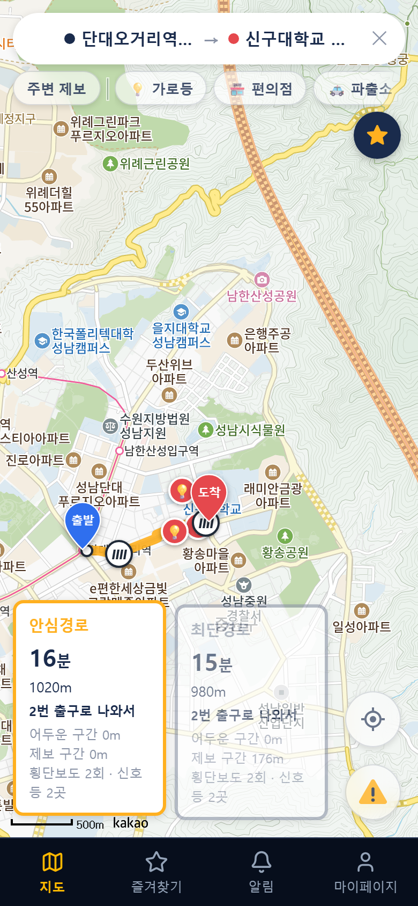
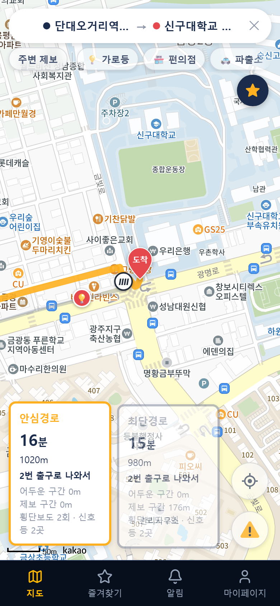
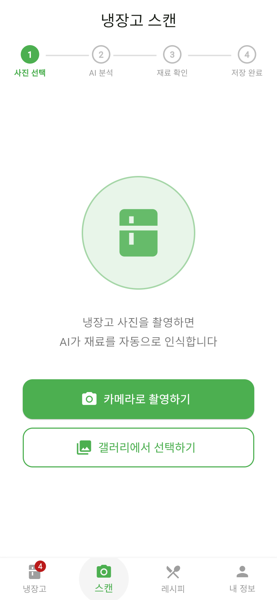
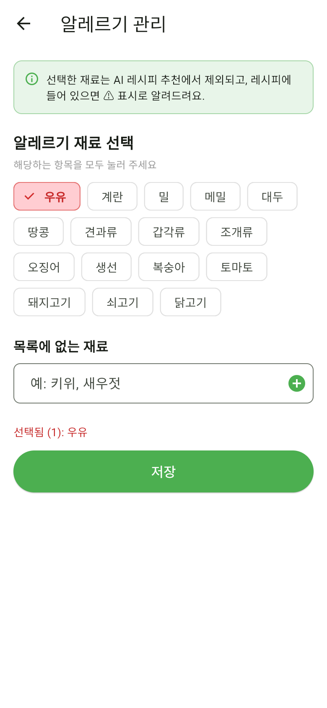
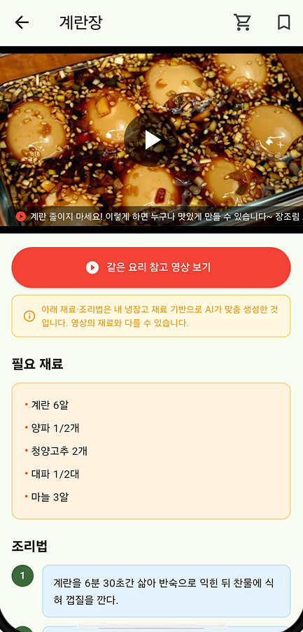
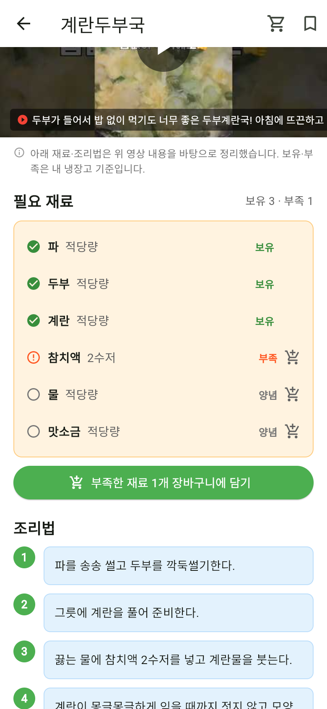
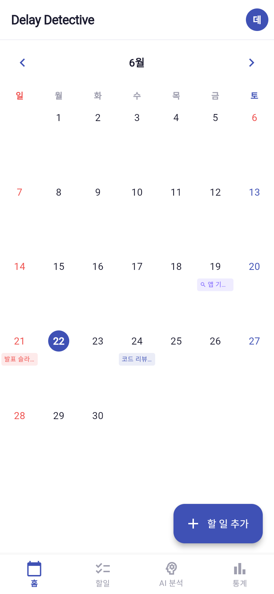
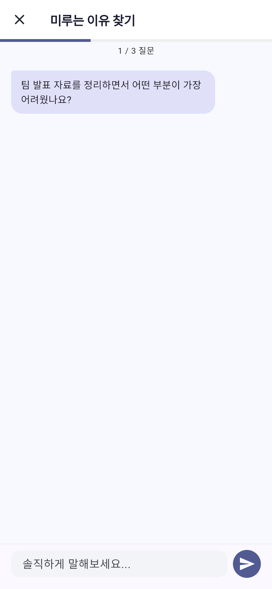
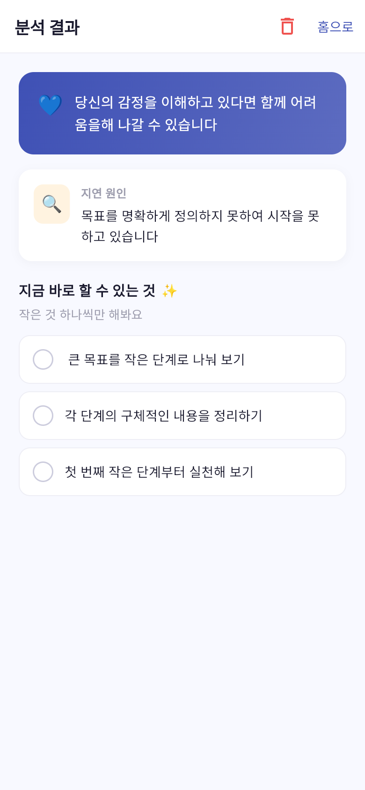

졸업작품 · 3인 팀 · 2026.09 ~ 11 · React, Spring Boot, MySQL, WebSocket, Python
어떤 서비스인가
가로등 공공데이터와 사용자 위험 제보로 도로마다 위험도를 계산해, 최단경로와 덜 위험한 경로(안심경로)를 같이 보여주는 웹 지도 서비스입니다.
제가 맡은 부분: 지도와 경로 탐색
데이터 OpenStreetMap 도로 데이터(교차로 약 3,630개, 도로 약 5,890개)와 성남시 보안등 데이터를 Python으로 가공했습니다. 서버가 켜질 때 CSV를 DB에 넣고, 파일이 바뀐 경우에만 다시 넣습니다.
서버 같은 다익스트라 알고리즘에 비용 계산만 다르게 넣어 두 경로를 한 번에 구합니다. 안심 비용은 도보 비용 × (1 + 2.0 × 위험도)이고, 도보 비용은 도로 종류별로 다르게(보행자길 0.9배 ~ 큰 차도 2.0배, 계단 2.5배) 정했습니다.
실시간 보고 있는 경로 50m 안에 새 제보가 들어오면 경로를 다시 계산하고, 계산하는 동안에는 기존 경로를 유지합니다.
화면 카카오맵에 두 경로를 실제 도로 모양대로 그리고, 장소 검색, 출발/도착 지정, 경로 비교 카드를 만들었습니다. 지하철역이면 빠른 출구와 계단·에스컬레이터 여부도 안내합니다.

출발지에서 도착지까지 경로

안심경로와 최단경로 비교 (제보 구간 0m / 176m)
개발하면서 겪은 문제와 해결
문제
원인
해결
학교 쪽으로 가는 경로가 남쪽 교차로까지 크게 돌아서 나왔습니다. 카카오맵에서는 바로 건너가는 길이었습니다.
공개 지도 데이터(OpenStreetMap)에서 학교 안 도로와 큰길이 끊겨 있었습니다.
횡단보도 건너편 15m 안에 끊긴 길이 있으면 이어 주도록 했습니다. 경로가 600m에서 466m로 줄었습니다.
위험 제보 1건 때문에 15m 옆 학교 도로 120m 전체가 위험 구간이 되어, 안심경로가 돌아갔습니다.
제보 위치에서 25m 안에 있는 모든 길에 위험도를 반영하고 있었습니다.
제보 위치에서 가장 가까운 길에만 반영하도록 바꿨습니다.
안심경로가 최단경로보다 거리가 더 짧게 표시되는 경우가 있었습니다.
최단경로를 거리 그대로가 아니라 도로 종류별 가중치를 곱한 값으로 계산하고 있었습니다.
안심경로가 최단경로 기준으로도 더 나으면 최단경로도 그 길로 안내하도록 했습니다.
팀 진행 방식
기능별(지도·경로 / 제보 / 마이페이지)로 역할을 나눠 각자 화면부터 서버까지 맡았고, 기능별 브랜치와 Pull Request로 코드를 합쳤습니다.
2
PROJECT 02
냉장고 요리사
3인 팀으로 개발(2026.05 ~ 06) 후 수업 과제로 개선(2026.06 ~ 10) · Flutter, Spring Boot, Spring Security(JWT), Oracle, Gemini
개선 과정
다른 과목에서 기존 앱의 개선점을 찾아 직접 개선하는 과제가 있어서, 팀 프로젝트로 만들었던 이 앱을 대상으로 정했습니다.
닐슨의 사용성 평가 기준(휴리스틱)으로 13개 화면을 평가해 문제점과 개선 방안을 정리하고, 우선순위가 높은 1~8번을 개인 저장소에서 고쳤습니다.
개선 전과 후
개선 전

개선 후
문제 분석이 얼마나 걸리는지 표시가 없어서 기다리는 동안 멈춘 건지 알 수 없었습니다.
수정 4단계 진행 표시, 업로드 진행률과 경과 시간, 취소 버튼을 넣었습니다. 다른 탭에 갔다 와도 분석 상태가 유지됩니다.
개선 전

개선 후
문제 알레르기를 쉼표로 직접 입력해서 오타가 나면 필터링이 안 될 수 있었습니다.
수정 목록에서 고르는 방식으로 바꾸고, 서버에서도 알레르기 재료를 레시피 추천에서 빼도록 했습니다.

개선 전

개선 후
문제 필요한 재료 중 무엇이 냉장고에 있는지 알 수 없고, 장바구니에 담으려면 다시 입력해야 했습니다.
수정 냉장고 재료와 비교해 보유·부족을 표시하고, 부족한 재료를 버튼 하나로 장바구니에 담게 했습니다.
구현 내용
AI 재료 인식 사진을 Gemini Vision으로 분석하되, 결과를 바로 저장하지 않고 사용자가 확인·수정한 뒤 저장하도록 했습니다.
알레르기 매칭 "게, 밀, 콩, 굴" 같은 한 글자 재료는 다른 재료 이름에 섞여 잘못 걸리기 쉬워서, 재료 이름 맨 앞에 올 때만 걸리도록 했습니다.
레시피 정리 북마크하지 않은 추천 레시피는 15개까지만 남도록 자동으로 정리합니다.
그 밖에 JWT 로그인, 아이디·이메일 실시간 중복 확인, 유통기한 임박 알림(3일·1일 전)과 목록 정렬을 만들었습니다.
3
PROJECT 03
Delay Detective
수업 과제 · 개인 · 2026.05 ~ 06 (6주) · Flutter, Provider, Hive, Firebase, Groq, Playwright · AI 코딩 도구 활용
AI 코딩 도구(Claude Code)를 활용해 앱을 개발하는 수업 과제로 만든 프로젝트입니다. 코드와 문서 초안은 AI가 만들었고,
저는 AI에게 작업을 나눠 지시하고, 결과물을 검토해 기술을 결정하고, 앱을 직접 실행·테스트하며 고칠 부분을 찾았습니다.

홈 화면

미루는 이유를 묻는 인터뷰

분석 결과와 작게 나눈 할 일
주요 구조
인터넷 없이도 동작 변경 내용을 먼저 기기 안(Hive)에 저장하고 대기열에 쌓아 두었다가, 연결되면 Firebase로 올립니다. 실패하면 다음 연결 때 다시 시도합니다.
기기 간 충돌 처리 같은 할 일이 두 기기에서 수정되면 수정 시각을 비교해 나중 것을 남깁니다. 단위 테스트로 확인했습니다.
기술 선택 문서 프레임워크, 상태 관리, 저장 방식을 고를 때 대안을 비교한 문서(ADR)를 남겼습니다. 저장 방식은 4가지 대안을 비교해 Firebase + 기기 내 저장을 골랐습니다.
코드 구조 domain / data / application / presentation 계층으로 나눴습니다.
개발하면서 겪은 문제와 해결
문제
원인
해결
자동화 테스트(Playwright)에서 할 일 제목을 입력한 뒤 아래쪽 저장 버튼을 눌러도 반응이 없었습니다.
Flutter Web은 화면을 캔버스에 그리는데, 글자를 입력하는 동안 숨겨진 입력창이 포커스를 잡고 있어서 본문 클릭이 앱에 전달되지 않았습니다.
입력 후에도 눌리는 상단 바에 저장 버튼을 추가하고, 채팅 입력은 Enter로 보낼 수 있게 바꿨습니다.
AI 응답에 한자·일본어·러시아어가 섞여 나오는 경우가 있었습니다.
사용한 언어 모델이 한국어 답변 중간에 다른 언어를 섞어 쓰는 경우가 있었습니다.
응답을 받은 뒤 한국어가 아닌 문자를 지우는 처리를 넣었습니다.
오늘이 마감인 할 일이 자정이 지나자마자 '지연'으로 표시되고, 앱을 다시 켜면 지연 표시가 사라졌습니다.
마감을 날짜가 아니라 현재 시각과 비교했고, 바뀐 지연 상태를 기기에 저장하지 않았습니다.
날짜 단위로 비교하고, 바뀐 상태를 기기(Hive)에 저장하도록 했습니다. 지난 날짜로 추가한 할 일도 바로 확인합니다.